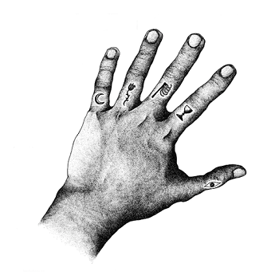

Circle of Ouroborus son un dúo finlandés especialmente prolífico. Lo normal desde 2009 (su primera demo es del 2004) es que saquen de dos a tres LP’s por año, a los que se les deben sumar otros tres o cuatro EP’s. En la entrevista que concedieron al webzine The Inarguable, el vocalista Antti Klemi explicó que son prolíficos porque entienden su carrera como una continuidad de lanzamientos, como un discurso abierto. No como un discurso de obras cerradas que marquen su carrera de manera perentoria. De hecho, sus lanzamientos son estrictamente limitados por eso mismo: no desean que ninguno de sus discos sea más importante que otro, y les da igual que sólo los tengan unos pocos. Sólo desean que las pocas copias que editan no acaben cogiendo polvo en el almacén de alguna distribuidora, y a la vez que no sean revendidas por sumas desorbitadas en Ebay (motivo por el que han llegado a relanzar uno de sus discos, la triple demo Armon keitaalla). Por eso, en pleno ejercicio de coherencia, se muestran totalmente a favor de la descarga digital libre de su discografía. En palabras de Antti Klemi, «una vez que completamos el proceso de grabación, nos deja de importar el disco en sí».
{kind=link}
Rauta, el encargado del resto de aspectos musicales de la banda, dejó claro en el foro Nuclear War Now!que la etiqueta «underwater» engloba a tres de sus álbumes grabados en la misma época, y que por el tipo de sonido al que recuerdan se les denomina así. Pese a haber sido grabados en una misma época, han sido lanzados en años consecutivos. Son Eleven Fingers (2011), Abrahadabra (2012) y The Final Egg (2013).
Eleven Fingers
Corría el año 2011 cuando, el mismo melómano que ahora os escribe, yacía inerte en un escenario postapocalíptico. Había perdido el ánimo por descubrir nuevos grupos: todo comenzaba a sonarme demasiado parecido, y las bandas experimentales a las que me acercaba carecían de una solidez en su propuesta. Ese mismo año, R.Loren, artífice de la banda Pyramids, decidió abrir un sello discográfico, Handmade Birds. Recuerdo curiosear entre sus discos y sentir cierta curiosidad por lo variopinto de sus estilos: drone, dark ambient, industrial, HNW, electrónica, pop… pensaba que mi eclecticismo era ofensivo. Pues no. Los hay mejores.
Qué importante es un buen texto promocional a la hora de llevar un sello underground. Yo, como muchos otros, es lo primero que miro al entrar en la web de algún sello. R.Loren sabe vender su producto: su estilo es una mezcla entre referencias estrambóticas a bandas casi opuestas, pasión, un poco de hipérbole, y sobretodo brevedad. Sobre el disco del que os hablo, Eleven fingers, recuerdo leerle diciendo que era «el disco más importante quizás de los últimos veinte años», siendo «una reinvención completa de lo que resulta acogedor al oído, […] con momentos de atonalidad post-punk y melodías sutiles, contrarrestadas por momentos de agresión calculada». El disco quedó clasificado como el séptimo mejor disco de metal de 2011 en Pitchfork, que también le dedicó una extensa review. No se puede decir que a nuestro querido tejano le falte ojo.
Nunca has escuchado nada así
Ya sólo me faltó leer la review de mi colega Ian Flick para hacerme con el vinilo lo más rápido que pude. Ésto fue lo primero que escuché:
Y esta fue mi primera impresión: «estoy escuchando un mp3 con un bit rate insultantemente bajo». Tarde unos días en captar el concepto que intentaba asir. Al contrario: ese sonido desaliñado y difuso ES la esencia de este lanzamiento. No falla: persona a la que se lo presento, persona a la que le alucina. En sus respuestas acerca de lo que creen que están escuchando es donde veo la riqueza que genera Eleven Fingers: «música que parece estar sonando en el cuarto de al lado», «grabaciones desde el fondo de una bañera», «guitarras que parecen teclados». Todas son ciertas, pero todas mienten al intentar etiquetar lo que hace esta banda:
Cuatro elementos hacen de este disco algo grandioso: las difuminadas guitarras con trémolo que escuchamos en un tercer plano, con aspiraciones a recordarnos a una pieza de ambient; la guitarra solista que escuchamos en un segundo plano, con un sonido entre los 8-bits y el teclado más barato de un Cash Converter; la voz, entre atonal y desafinada, que recuerda a Ian Curtis, el canto gregoriano o al black metal según el corte y la batería, en un primerísimo primer plano abriendo paso al desfile de riffs de cada tema, siempre modulando el tempo. La principal virtud de este disco es, junto con su radical originalidad sonora, su versatilidad compositiva: hay tantos momentos pop como meditativos. La clave para esta transición entre estilos tan opuestos está en la batería, que de manera muy orgánica regula la dinámica del disco. En los momentos meditativos, a veces roza el post-punk más lúgubre: ése que comparte matices con el doom.
Lo guardo como oro en paño por ser el disco que me ayudó a despertar de mi letargo musical. Pero también me abrió el entendimiento a una paleta de sonidos impensable para mí hace unos años. Lo normal es que en las primeras escuchas oigáis tres canciones en vez de una, siendo vuestro cerebro incapaz de ensamblar la melodía de las seis cuerdas con la batería y la línea vocal. Paciencia, pues estamos ante uno de los discos más atípicos jamás creados. Atesora y no rechaces esa capacidad de asombro, pues es lo que te va a hacer volver a él.
Apoyános